Capítulo 1 Visualização de dados com ggplot2
Para a correta execução dos códigos desse capítulo, utilizaremos algumas configurações específicas.
Inicialmente, precisaremos carregar o pacote nycflights13, que contém os dados de todos os voos da cidade de Nova York em 2013.
##
## Attaching package: 'gridExtra'## The following object is masked from 'package:dplyr':
##
## combine1.2 Primeiros passos

Exercício 1.2.3
O que a variável drv descreve?
Solução. Executamos o comando ?mpg no console no R e a página de ajuda foi aberta. Nela encontramos o significado de cada variável do conjunto de dados.
A varíável descreve o tipo de tração dos carros analisados, onde f significa tração dianteira, r significa tração traseira e 4 significa tração nas quatro rodas.
Exercício 1.2.5
O que acontece se você fizer um gráfico de dispersão de class versus drv? Por que esse gráfico não é útil?
Solução.
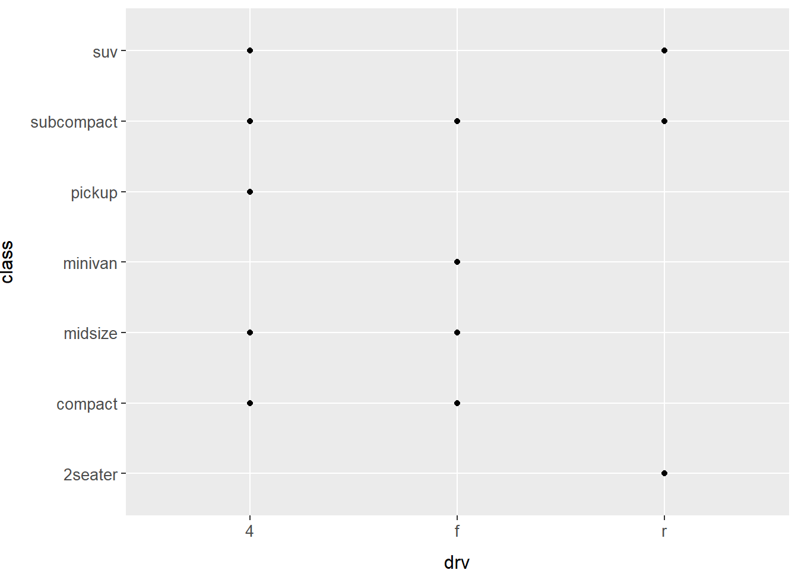
Apesar de serem exibidos dados no gráfico, nenhuma informação substancial é extraída, uma vez que o tipo de tração não está (a princípio) relacionado com a categoria do carro. Outro fator que torno o gráfico pouco informativo é que há, por exemplo, diversas SUVs com tração nas 4 rodas, contudo os valores ficam sobrepostos no gráfico, não dando dimensão do quanto de dados temos.
Abaixo seguem duas opções de como trazer mais informação ao gráfico:
- a primeira opção adiciona um ruído aos dados (
position = jitterougeom_jitter()) de modo que não haja sobreposição;
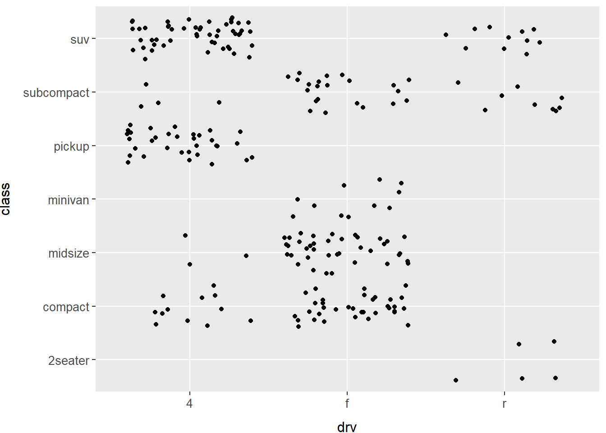
- a segunda opção, bem mais avançada, adiciona uma estética de
sizeconsiderando a quantidade de registros.
mpg %>%
group_by(class, drv) %>%
summarize(count = n()) %>%
ggplot(mapping = aes(x = drv, y = class, size = count)) +
geom_point() +
tema## `summarise()` has grouped output by 'class'. You can override using the
## `.groups` argument.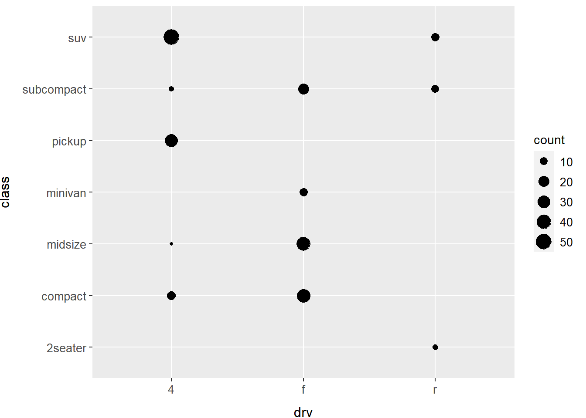
1.3 Mapeamentos estéticos
Exercício 1.3.2
Quais variáveis em mpg são categóricas? Quais variáveis são contínuas? Como você pode ver essa informação quando executa mpg?
Solução. Usando ?mpg vemos que as variáveis categóricas são: manufacturer, model, trans, drv, fl e class. As variáveis contínuas são: displ, cty, hwy.
Exercício 1.3.3
Mapeie uma variável contínua para color, size e shape. Como essas estéticas se comportam de maneira diferente para variáveis categóricas e contínuas?
Solução.
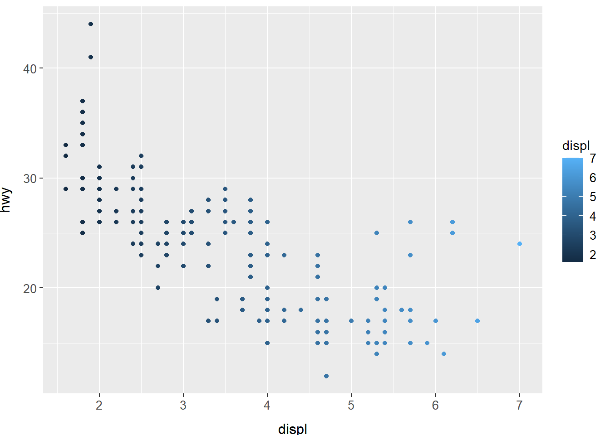
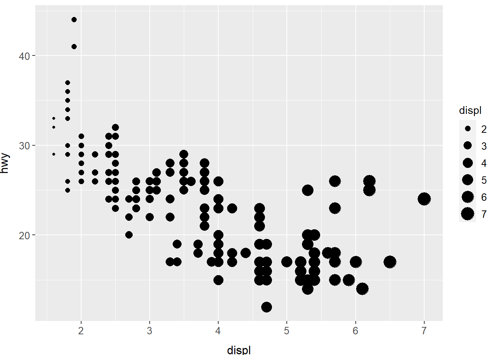
## Error in `geom_point()`:
## ! Problem while computing aesthetics.
## ℹ Error occurred in the 1st layer.
## Caused by error in `scale_f()`:
## ! A continuous variable cannot be mapped to the shape aesthetic
## ℹ choose a different aesthetic or use `scale_shape_binned()`Quando possível, a biblioteca ggplot apesenta a estética em um gradiente, como em color e size. Porém, nem sempre isso é possível, como vemos em shape, que só pode ser utilizada com variáveis discretas ou categóricas.
Exercício 1.3.4
O que acontece se você mapear a mesma variável a várias estéticas?
Solução.
ggplot(data = mpg) +
geom_point(mapping = aes(x = displ, y = hwy, size = class, color = class, shape = class)) +
tema## Warning: Using size for a discrete variable is not advised.## Warning: The shape palette can deal with a maximum of 6 discrete values because
## more than 6 becomes difficult to discriminate; you have 7. Consider
## specifying shapes manually if you must have them.## Warning: Removed 62 rows containing missing values (`geom_point()`).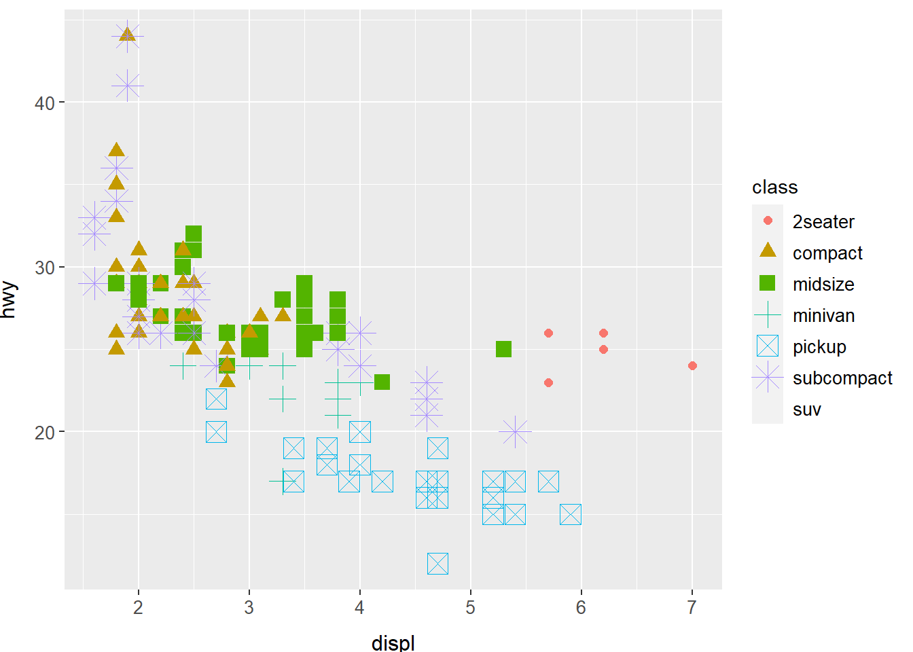
Os valores da variável serão representados de modo a atender todas as estéticas simultaneamente, por exemplo, no gráfico acima é dada uma cor, um formato e um tamanho específicos para cada classe de veículo. Os veículos de dois lugares são exibidos como um disco rosa pequeno.
1.5 Facetas
Exercício 1.5.2
O que significam as célula em branco em um gráfico com facet_grid(drv ~ cyl)? Como elas se relacionam a este gráfico?
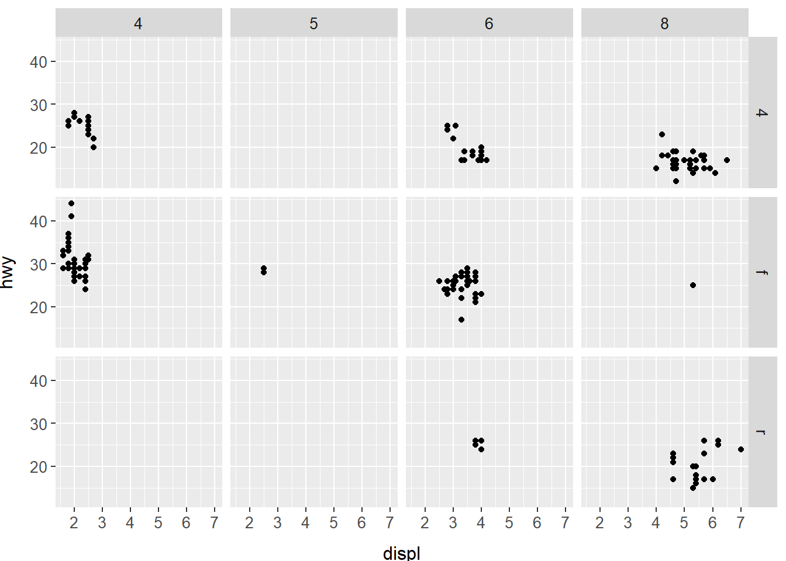
Solução. Significa que para aquela combinação de variáveis, não há nenhum valor observado. Por exemplo, não há nenhum veículo com 5 cilindros e tração nas quatro rodas.
Exercício 1.5.3
Que gráficos o código a seguir faz? O que . faz?
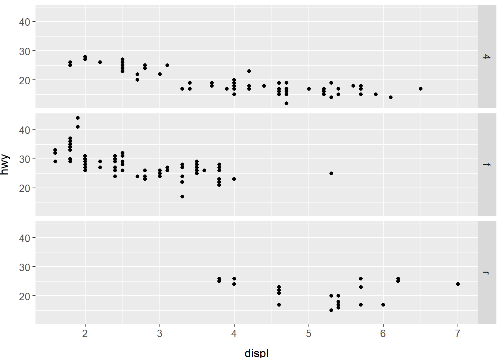
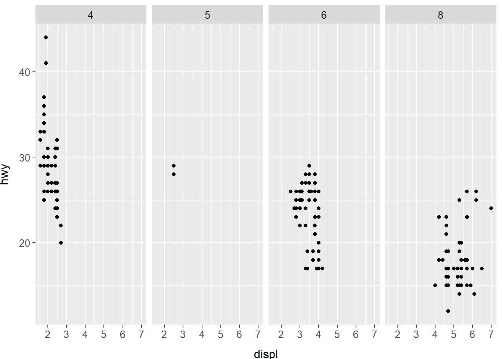
Solução. São gerados os gráficos de dispersão segregados pelas variáveis drv e cyl, respectivamente. O . indica que não queremos considerar nenhuma segregação naquela dimensão do grid (linha ou coluna).
Exercício 1.5.4
Pegue o primeiro gráfico em facetas dessa seção.
ggplot(data = mpg) +
geom_point(data = transform(mpg, class = NULL), mapping = aes(x = displ, y = hwy), color = "gray80") +
geom_point(mapping = aes(x = displ, y = hwy)) +
facet_wrap(~ class, nrow = 2) +
tema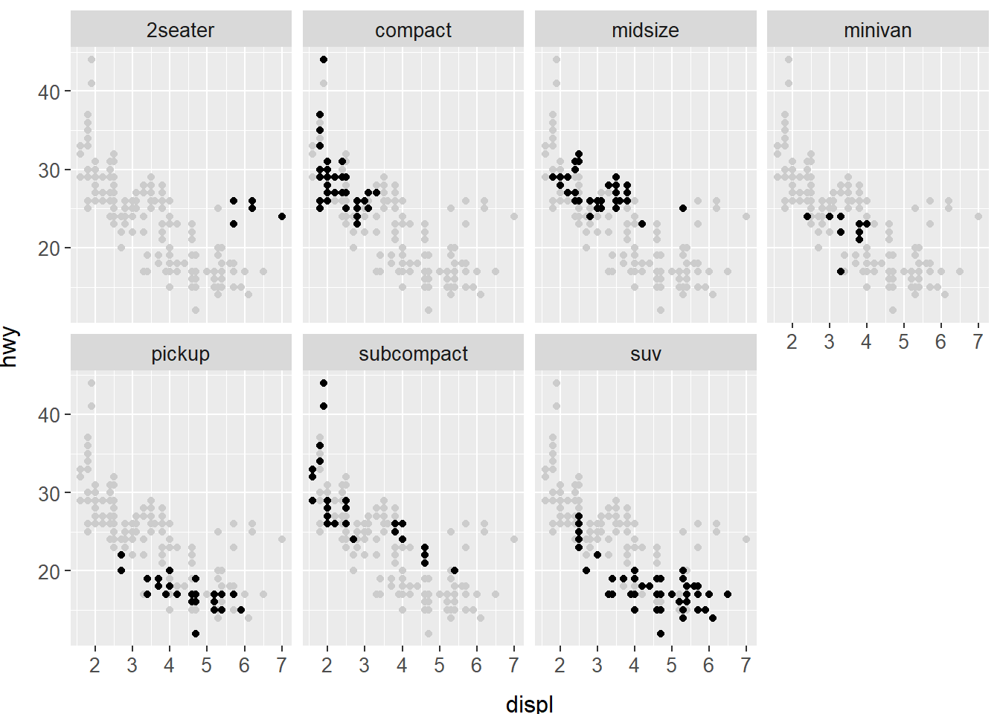
Quais são as vantagens de usar facetas, em vez de estética de cor? Quais são as desvantagens? Como o equilíbrio poderia mudar se você tivesse um conjunto de dados maior?
Solução. A principal vantagem no uso de facetas é que fica mais fácil analisar os dados quando eles estão separados em seu próprio contexto, contudo visualizá-los assim dificulta a comparação entre grupos.
Exercício 1.5.5
Leia ?facet_wrap. O que nrow faz? o que ncol faz? Quais outras opções controlam o layout de paineis individuais? Por que facet_grid() não tem variáveis nrowe ncol?
Solução.
?facet_wrapOs atributos ncol e nrow são utilizados pelo facet_wrap para determinar o número de colunas ou linhas (respectivamente) nas quais serão distribuídos os gráficos segregados. Esses atributos não figuram em facet_grid pelo fato deste já organizar as facetas retangularmente.
1.6 Objetos geométricos
Exercício 1.6.1
Que geom você usaria para desenhar um gráfico de linha? Um diagrama de caixas (boxplot)? Um histograma? Um gráfico de área?
Solução.
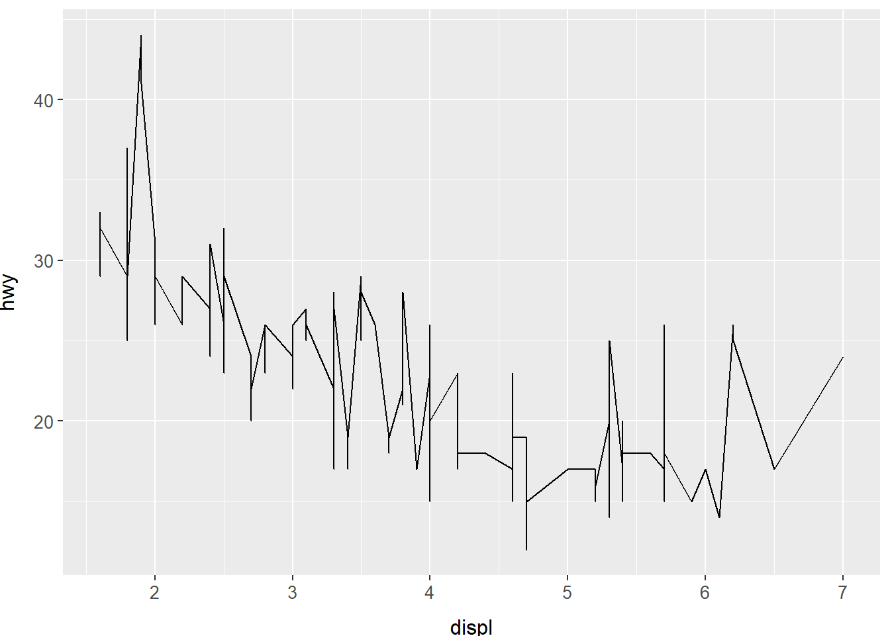
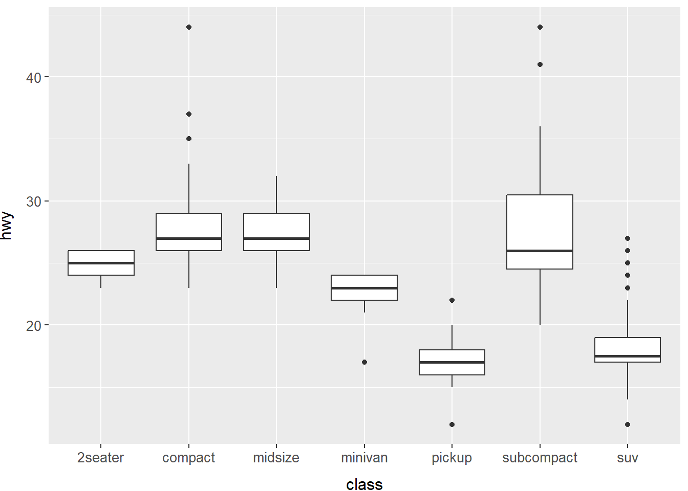
## `stat_bin()` using `bins = 30`. Pick better value with `binwidth`.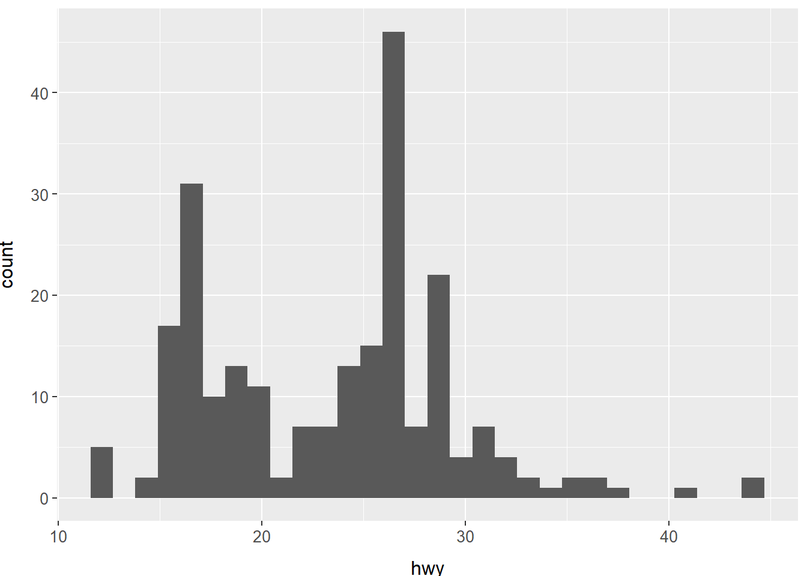
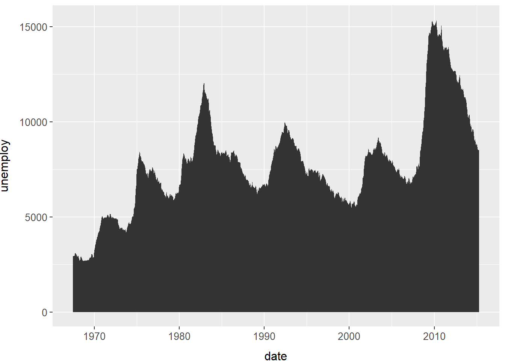
Podem ser utilizados, respectivamente as geoms: line, boxplot, histogram e area.
Exercício 1.6.2
Execute este código em sua cabeça e preveja como será o resultado. Depois execute o código no R e confira suas previsões:
ggplot(data = mpg, mapping = aes(x = displ, y = hwy, color = drv)) +
geom_point() +
geom_smooth(se = FALSE) +
tema## `geom_smooth()` using method = 'loess' and formula = 'y ~ x'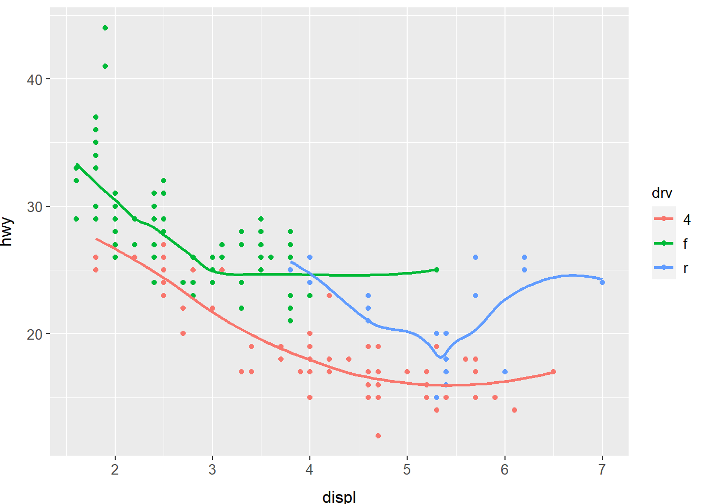
Solução. O gráfico bateu com a expectativa.
Exercício 1.6.3
O que o show.legend = FALSE faz? O que acontece se você removê-lo? Por que você acha que usei isso anteriormente no capítulo?
Solução.
ggplot(data = mpg, mapping = aes(x = displ, y = hwy, color = drv)) +
geom_point(show.legend = FALSE) +
geom_smooth(se = FALSE, show.legend = FALSE) +
tema## `geom_smooth()` using method = 'loess' and formula = 'y ~ x'
Ele indica que, para a camada à qual se aplica, não serão geradas as legendas de identificação.
Exercício 1.6.4
O que o argumento se para geom_smooth faz?
Solução.
?geom_smoothEsse argumento indica se o intervalo de confiança utilizado no processo de suavização da linha deve ou não ser exibido no gráfico.
Exercício 1.6.5
Esses dois gráficos serão diferentes? Por quê/por que não?
ggplot(data = mpg, mapping = aes(x = displ, y = hwy)) +
geom_point() +
geom_smooth() +
tema
ggplot() +
geom_point(data = mpg, mapping = aes(x = displ, y = hwy)) +
geom_smooth(data = mpg, mapping = aes(x = displ, y = hwy)) +
temaSolução. Os gráficos serão iguais. Ao informar os parâmetros data e mapping na função ggplot essas atributos serão considerados como globais, sendo utilizado em todos as camadas do gráfico, a menos que alguma das camadas os sobrescreva. No segundo gráfico, não são definidos parâmetros globais, porém, o mesmo parâmetro é passado para ambas as camadas, sendo assim, a única diferença é o código estar duplicado.
Exercício 1.6.6
Recrie o código R necessário para gerar os seguintes gráficos:
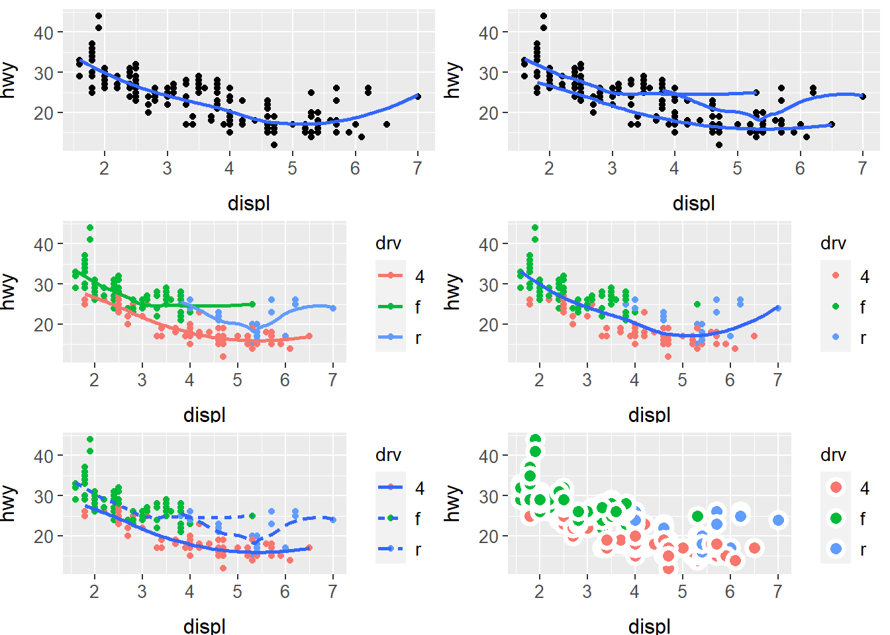
Solução.
a <- ggplot(data = mpg, mapping = aes(x = displ, y = hwy)) +
geom_point() +
geom_smooth(se = FALSE) +
tema
b <- ggplot(data = mpg, mapping = aes(x = displ, y = hwy)) +
geom_point() +
geom_smooth(mapping = aes(group = drv), se = FALSE) +
tema
c <- ggplot(data = mpg, mapping = aes(x = displ, y = hwy, color = drv)) +
geom_point() +
geom_smooth(se = FALSE) +
tema
d <- ggplot(data = mpg, mapping = aes(x = displ, y = hwy)) +
geom_point(mapping = aes(color = drv)) +
geom_smooth(se = FALSE) +
tema
e <- ggplot(data = mpg, mapping = aes(x = displ, y = hwy)) +
geom_point(mapping = aes(color = drv)) +
geom_smooth(mapping = aes(linetype = drv), se = FALSE) +
tema
f <- ggplot(data = mpg, mapping = aes(x = displ, y = hwy, fill = drv)) +
geom_point(color = "white", shape = 21, size = 3, stroke = 2) +
tema1.7 Transformações estatísticas
Exercício 1.7.1
Qual é o geom padrão associado ao stat_summary()? Como você poderia reescrever o gráfico anterior usando essa função geom, em vez da função stat?
Exercício 1.7.2
O que geom_col() faz? Qual é a diferença entre ele e geom_bar()?
Solução.
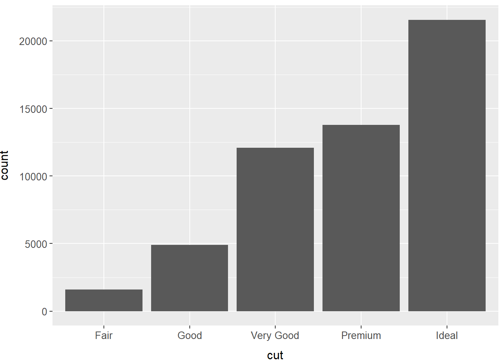
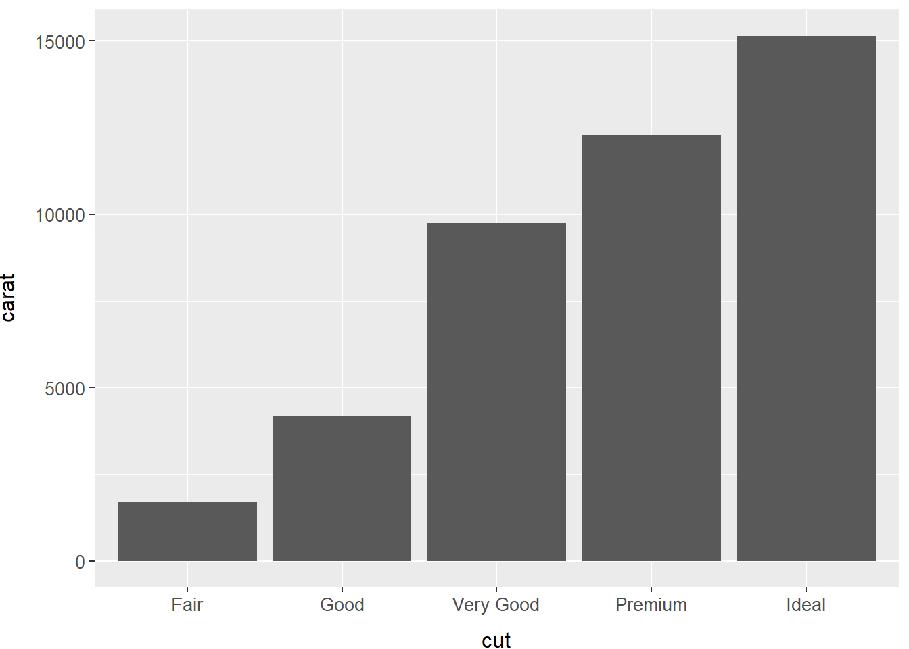
Enquanto no geom_bar a altura das barras representa uma transformação estatística relacionada às observações (como count, por exemplo), no geom_col podemos exibir o acumulado (soma) de uma variável para cada categoria exibida.
Exercício 1.7.3
A maioria dos geoms e stats vem em pares, que são quase sempre usados juntos. Leia a documentação e faça uma lista de todos os pares. O que eles têm em comum?
Solução.
| # | Geom | Stat |
|---|---|---|
| 01 | Blank | Identity |
| 02 | Curve | Identity |
| 03 | Segment | Identity |
| 04 | Path | Identity |
| 05 | Line | Identity |
| 06 | Step | Identity |
| 07 | Poligon | Identity |
| 08 | Raster | Identity |
| 09 | Rect | Identity |
| 10 | Tile | Identity |
| 11 | Ribbon | Identity |
| 12 | Area | Identity |
| 13 | Align | ? |
| 14 | ABLine | ? |
| 15 | HLine | ? |
| 16 | Density | Density |
| 17 | DotPlot | ? |
| 18 | Freqpoly | Bin |
| 19 | Histogram | Bin |
| 20 | Col | Identity |
| 21 | Bar | Count |
| 22 | Label | Identity |
| 23 | Text | Identity |
| 24 | Jitter | Identity |
| 25 | Point | Identity |
| 26 | Quantile | Quantile |
| 27 | Rug | Identity |
| 28 | Boxplot | Boxplot |
| 29 | Violin | YDensity |
| 30 | Count | Sum |
| 31 | Bin 2D | Bin 2D |
| 32 | Density 2D | Density 2D |
| 33 | Hex | Bin Hex |
| 34 | Cross Bar | Identity |
| 35 | Error Bar | Identity |
| 36 | Line Range | Identity |
| 37 | Point Range | Identity |
| 38 | Map | Identity |
| 39 | Contour | Contour |
| 40 | Contour Filled | Contour Filled |
Exercício 1.7.4
Quais variáveis stat_smooth() calcula? Quais parâmetros controlam seu comportamento?
Solução.
?stat_smoothExercício 1.7.5
Em nosso gráfico de barra de proportion, precisamos configurar group = 1. Por quê? Em outras palavras, qual é o problema com esses dois gráficos?
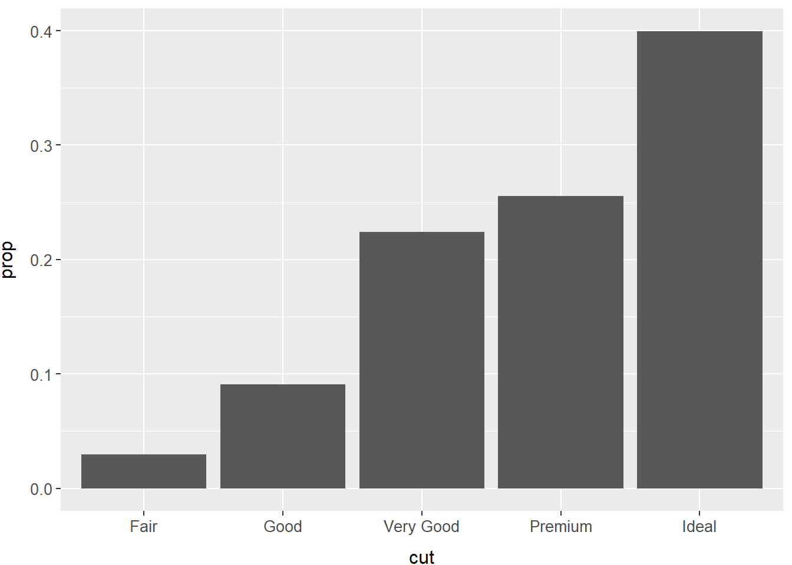
Solução.
ggplot(data = diamonds) +
geom_bar(mapping = aes(
x = cut,
fill = color,
y = after_stat(prop),
group = color
)) +
tema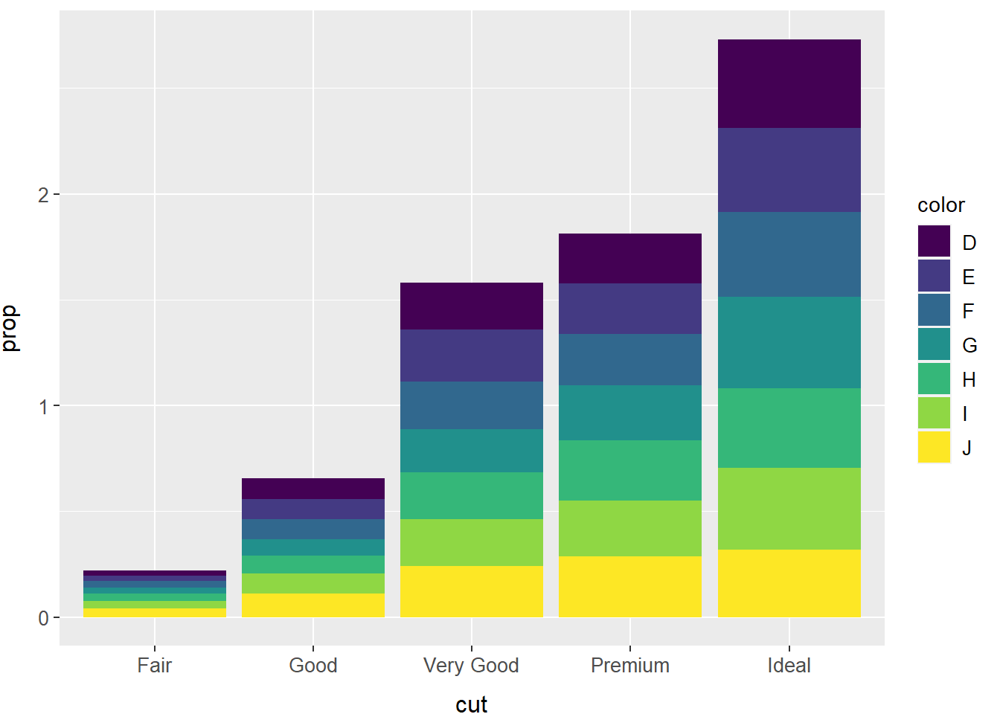
Quando estamos trabalhando com proporções (ou estátisticas em geral), é importante destacar para o ggplot qual agrupamento ele deve considerar, caso contrário ele irá considerar um único grupo e dará uma impressão incorreta ao gráfico. No primeiro exemplo, foi utilizado group = 1 (e, na verdade, poderia ser qualquer valor) apenas para indicar que deveria ser realizado um agrupamento.
1.8 Ajustes de posição
Exercício 1.8.2
Quais parâmetros para geom_jitter controlam a quantidade de oscilação?
Solução. Conforme a documentação disposta em ?geom_jitter, são utilizados os parâmetros width e height.
Exercício 1.8.3
Compare o contraste entre geom_jitter e geom_count.
Solução.
a <- ggplot(data = mpg, mapping = aes(x = cty, y = hwy)) +
geom_jitter() +
tema
b <- ggplot(data = mpg, mapping = aes(x = cty, y = hwy)) +
geom_count(show.legend = FALSE) +
tema
grid.arrange(a, b, nrow = 2)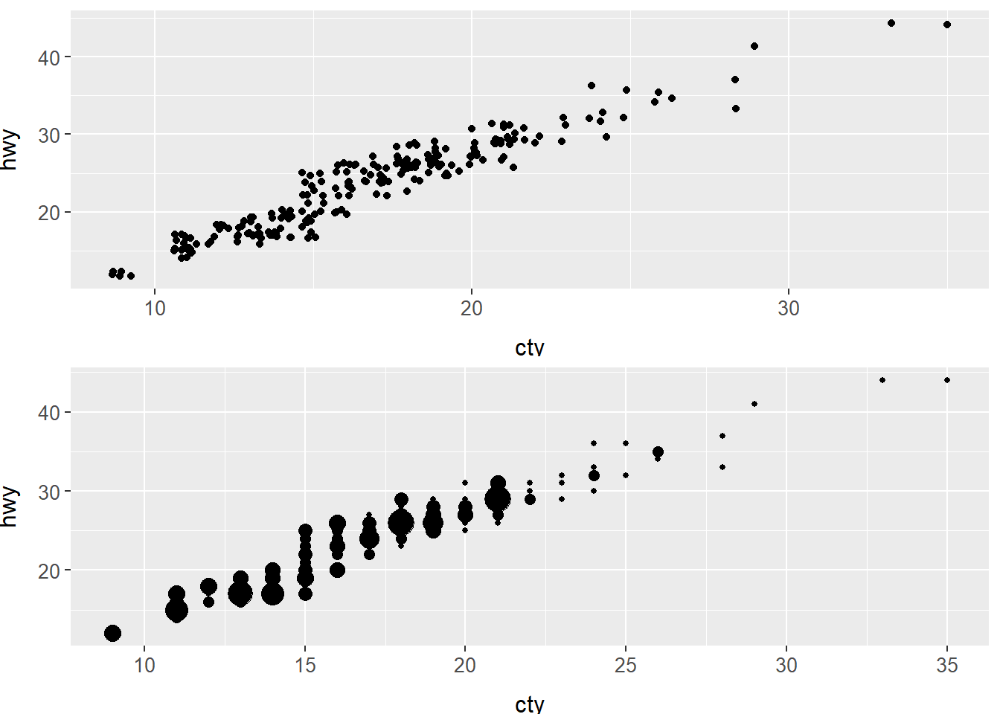
Para contornar o problema da sobreposição de pontos, geom_jitter adiciona um pequeno ruído aleatório aos dados, enquanto o geom_count contabiliza os pontos sobrepostos e altera o tamanho dos pontos conforme a quantidade.
1.9 Sistemas de coordenadas
Exercício 1.9.1
Transforme um gráfico de barras empilhadas em um gráfico de pizza usando coord_polar().
Exercício 1.9.2
O que labs() faz? Leia a documentação.
Solução. Usando o comando ?labs, vimos que esta função é utilizada para definir labels do gráfico, como título, subtítulo, títulos de eixos, etc.
Exercício 1.9.3
Qual é a diferença entre coord_quickmap() e coord_map()?
Solução. Usando o comando ?coord_map, notamos que a diferença é que enquanto coord_map() não preserva linhas retas, sendo assim, mais custoso computacionalmente, o coord_quickmap() o faz.
Exercício 1.9.4
O que o gráfico a seguir lhe diz sobre a relação entre mpg de cidade e estrada? Por que coord_fixed() é importante? O que geom_abline() faz?
ggplot(data = mpg, mapping = aes(x = cty, y = hwy)) +
geom_point() +
geom_abline() +
coord_fixed(ratio = 1, xlim = c(5, 45), ylim = c(5, 45)) +
tema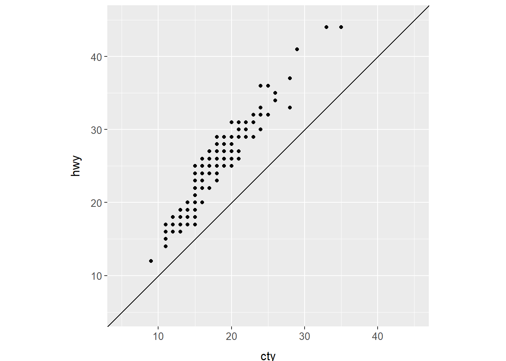
Solução. O gráfico mostra a relação entre a eficiência na cidade e na estrada. O coord_fixed() força que seja mantida uma proporção entre os eixos x e y, isto é, garante que uma unidade no eixo y corresponda a um número determinado de unidades no eixo x. A razão padrão é 1. Já o geom_abline() define uma linha de referência diagonal ao gráfico, no nosso caso, a linha é a reta dada por \(y - x = 0\).